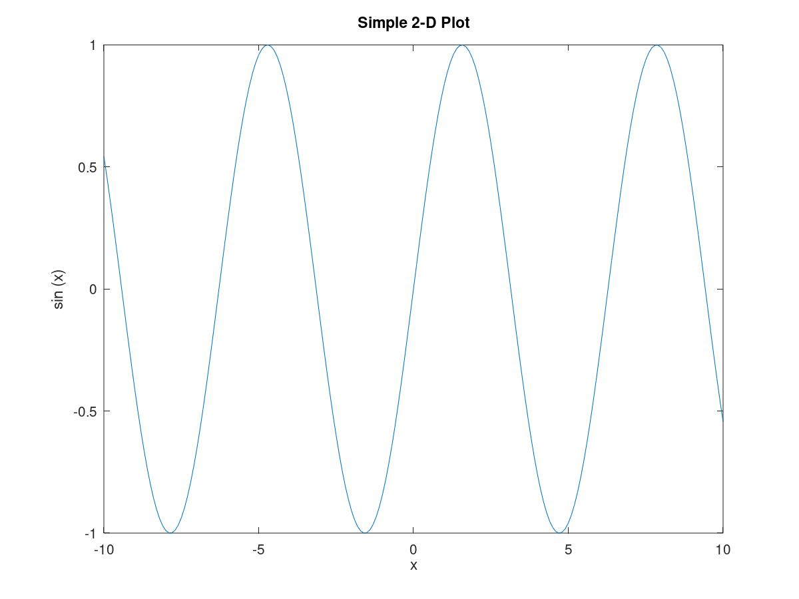
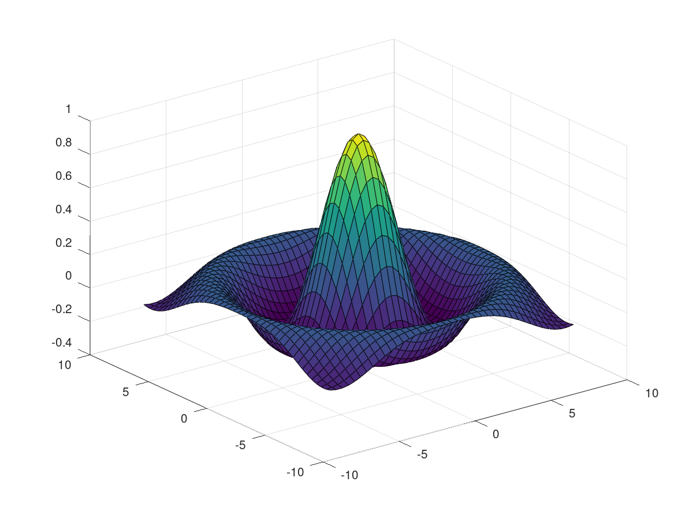

Partie 1 : calcul simple
b = [4; 9; 2];
A = [ 3 4 5;
1 3 1;
3 5 9 ];
x = A \ b
x = -1.5000 4.0000 -1.5000
Le ";" à la fin d'une ligne empêche la sortie d'être affiché
Partie 2 : sinus
figure(1) x = -10:0.1:10; y = sin (x); plot (x, y); title ("Simple 2-D Plot"); xlabel ("x"); ylabel ("sin (x)");
Une sinusoide, ca donne le mal de mer.
Partie 3 : Le mexique
figure(2) sombrero()
Il y a quatre belles choses à Mexico : les femmes, les habits, les chevaux et les rues.